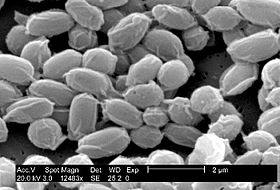

У наредној фази истраживања, Пастер је изучавао пилећу колеру. Срећним стицајем околности, сој бактерија којим је заразио пилиће био је ослабљен. Када је следећи пут покушао да их зарази, установио је да то није могуће. Инфицирање ослабљеним сојем бактерија учинило је да пилићи постану имуни на ово обољење.
Пастеров сарадник, Шарл Шамберлан, требало је да зарази пилиће док је Пастер био на одмору. Уместо тога, Шарл је и сам отишао на одмор. По повратку, заразио је пилиће старим бактеријским културама, они су се разболели, али су касније неочекивано оздравили. Шамберлан је сматрао да је дошло до грешке, али је Пастер исправно поставио теорију да су преживели пилићи постали имуни на бактерију чију су инфекцију преболели.
 Током 1870-их, применио је своје методе имунизације на сточну болест антракс. Принцип употребе слабијег облика болести да би се створила отпорност на теже заразе није била нова. Едвард Џенер је давно пре тога развио вакцину против великих богиња. Оно што је била новина је да се ослабљена варијанта болести сада производила људском интервенцијом. Пастер је овим намерно ослабљеним изазивачима болести дао име вакцине у знак поштовања према Џенеру (Џенер је изоловао вакцину против великих богиња од крава — на латинском: Vacca). Луј Пастер је произвео прву вакцину против беснила користећи осушену кичмену мождину заражених зечева. Ову методу је пронашао и на псима испробао Пастеров колега Емил Ру. Вакцина је први пут, и то успешно, примењена 6. јула 1885. године на деветогодишњем дечаку Јозефу Мајстеру кога је изгризао бесан пас.